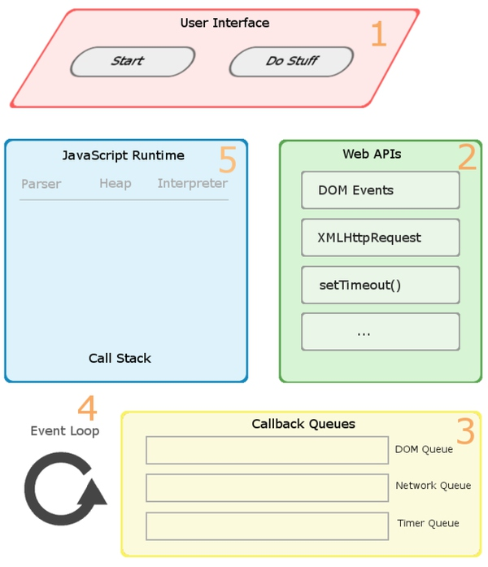
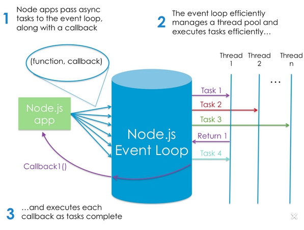

有关javascript事件模型的一点总结
有关javascript事件模型的一点总结
在谈论javascript的事件模型之前，我们在学习javascript的时候可能都听到过一下这些东西：javascript是单线程的，javascript是异步的等等…
这时候可能会想既然javascript是单线程的那么javascript又哪来的异步特性？javascript既然是单线程语言 ， 为什么会分主线程和消息线程？
要解答以上问题，我们需要弄清楚几个概念
- ECMAscript
- javascript
- javascript执行环境
ECMAscript是javascript的语言标准，ECMAscript并没有从语言层面上规定javascript的异步特性；javascript是ECMAscript规范的一种实现，是单线程的;javascript运行环境是浏览器或者node；
首先解释一下到底什么javascript的异步特性
javascript是单线程的，但是javascript的执行环境并不是单线程的；
但凡这种「既是单线程又是异步」的语言有一个共同特点：它们是 event-driven 的。驱动它们的 event 来自一个异构的平台。这些语言的 top-level 不象 C 那样是 main，而是一组 event-handler。虽然所有 event-handler 都在同一个线程内执行，但是它们被调用的时机是由那个驱动平台决定的。而且设计要求每个 event-handler 要尽快结束。未做完的工作可以通知那个异构的驱动平台来完成。所以那个驱动平台可以有许多线程。
恰好，浏览器就是这种 event-driven 架构的软件,nodejs也是这样的javascript运行环境、我们所探讨的“异步”都是由执行引擎所赋予的。于Firefox，这个引擎是SpiderMonkey，于Node.js这个引擎是V8。而提供这个异步能力的机制，则是我们所谓的Event Loop——事件轮询。
在浏览器端，浏览器使用 Event Loop 来协调 DOM 事件、UI 渲染、脚本执行和网络事件等。整个协调的过程都是通过 Event Loop 来控制的。每当 DOM 事件、计时器事件或者网络事件被触发时，它们的回调函数和 Context 都会被压入 Event Queue，而 Event Loop 则会从中取出回调函数并执行。
在Node端，Node采用V8作为JavaScript的执行引擎，同时使用libuv实现事件驱动式异步I/O。其事件循环就是采用了libuv的默认事件循环。
所以像setTimeout，setInterval这样的函数，实际上并不是由语言本身所约定的，而是浏览器/执行引擎来实现，向JavaScript暴露的、提供的异步入口。
因此，异步与单线程并没有出现矛盾。而具体到浏览器端，每个跃然于我们屏幕之前的Tab页，都拥有一个JS执行线程，即
There is only one JavaScript thread per window.页面上虽然只提供了一个JavaScript Call Stack用于执行代码，不过浏览器在内部还实现了一个或多个队列，借由事件轮询的机制来调度全部事件的处理，而且在一定程度上，陈旭编写者有权进入到这个内部的轮询中。其一，可以是Timer函数，其二，则可以是通过事件。
javascript的事件模型
copy一下javascript的事件模型在mdn上的定义：
javascript有一个基于事件驱动的并发模型；
运行环境的概念：现代javascript引擎大量实现和优化了以下描述的语义：
视觉表示：
栈
函数的调用会形成一个调用栈
当调用g的时候创建第一个调用栈包含了g的参数和局部变量；当g调用f的时候第二个调用栈被创建包含了f的参数和局部变量并且被推入栈顶部；
当f函数返回的时候栈顶的元素被推出栈，这样栈里面就只有g一个调用栈，当g返回的时候，栈就空了；
堆
对象被分配在堆中, 通过一个对象名，表示一个非结构化的内存区域;
队列
一个javascript的运行环境包含了一个消息队列，是一个等待被执行的消息列表，每个消息都会关联一个函数方法，当函数调用栈中有充足的容量的时候，消息就会从消息队列中取出并执行(When the stack has enough capacity, a message is taken out of the queue and processed. mdn上是这样描述的，我理解这个stack表示的应该就是函数的运行空间)。当栈变空之后表示消息执行结束。
事件轮询
事件轮询之所以叫做事件轮询是因为它的实现方式，通常实现是类似于下面的代码:
在事件轮询中消息的执行特点
在当前的消息a被执行之前，a的前一个消息b一定是被执行完全才会执行a；这提供了一些不错的特性，比如当一个函数f在运行的时候，其他的函数不可能在f执行完之前被执行，也就是说其他函数在f执行完之前不可能有机会去修改f函数中正在处理的数据；
这种事件模型有一个缺点，比如在浏览器中，当一个消息的执行时间过长的话，那么应用程序就不会去处理其他的用户交互比如点击或者滚动,比较好的处理方式就是减少一个消息的处理时间，如果可能的话可以把一个比较长的消息分解为几个零碎的消息；
怎样往事件队列中添加消息
在浏览器中，消息是在事件发生时添加的，并且附加了事件侦听器，如果没有侦听器，事件将会丢失。因此，点击具有点击事件处理程序的元素将会往消息队列中添加一条消息 - 与任何其他事件如滚动事件等一样。调用setTimeout后会在经过settimeout方法第二个参数所标识的时间之后将消息添加到队列中，如果队列中没有其他消息那么这条消息刚好会被处理，然而如果队列中有消息，那么settimeout添加到队列中的消息将必须等待其他消息被处理完成后才会被处理，因为这个原因，settimeout的第二个参数仅仅代表settimeout中的方法被执行的最小时间，而不是准确的执行时间;
零延迟的概念
零延迟并不是真正代表着回调会被立即执行，比如调用setTimeout(functionA, 0)的时候,在给定的时间间隔后并不会执行回调函数，functionA的执行时间会受到事件队列中的任务的影响，0同样也是funcationA被调用的最小时延
|
|
多个运行环境之间的通信
一个web worker或者一个cross-origin 的iframe都会有自己的执行堆栈和消息队列，不同的运行环境之间的通信只能通过postMessage方法
非阻塞
非阻塞是一个很有趣的javascript事件轮询的特性,处理i/o操作通常是通过事件和回调方法，例如应用程序在等待XHR的返回的时候还可以继续处理其他事件比如用户输入等；
根据mdn中关于javascript事件模型的描述，消息队列就是我们平常说的事件队列，消息就是事件
浏览器中的异步模型
DOM事件的接口中有同步事件与异步事件的区别。
DOM的同步方法，比方说DOM.setAttribute，DOM.style等等，顾名思义，它们都会在当前JS的执行线程同步执行，也因此我们在使用这些方法，有时候会带来重排重绘的副作用。
而异步事件，比如DOM.addEventListener，则会将函数以类似”委托”的形式注册到浏览器内建的队列中，等到某个”事件”被触发后，则回Call之前注册的函数。流程类似下图所示：

按图中所示，用户的Click事件会经历完整的1->2->3->4->5的生命周期，而假设当我们的事件正处于在Stage：5的状态做密集执行，与此同时又触发了别的事件，e.g. Timer 或者Interval，则后续的事件将会持续Pending在Event Queue中，直到Click的回调中所有同步代码执行完毕，Event Loop选取下一个在队列顶部的任务，再次执行。
nodejs端异步任务的执行流程
